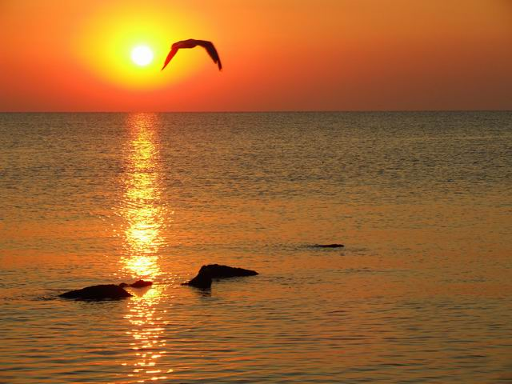
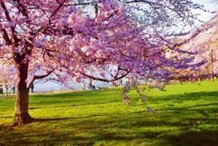
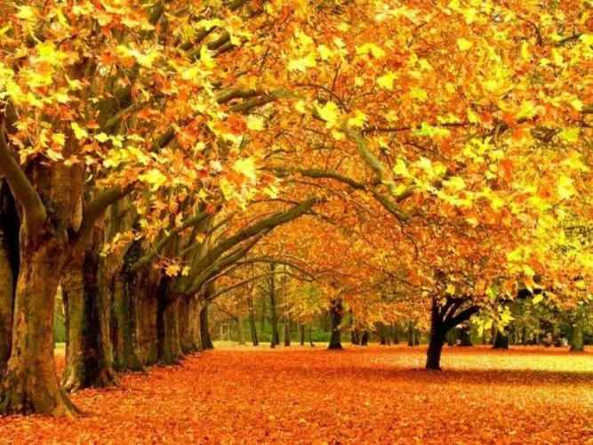

Anotimpuri:
Solstițiul ce are loc în timpul său se numește solstițiul de vară și marchează momentul în care, în emisfera respectivă, ziua are cea mai mare durată.
Data de început și de final al verii este aproximativă, și variază de la o cultură la alta. În zonele polare aflate între pol și cercul polar, în preajma solstițiului are loc fenomenul de „nopți albe”.

punct de vedere astronomic, marcarea începutului primăverii este, de cele mai multe ori, legată de echivalența dintre durata temporală zilei și a nopții, timp al anului numit echinocțiu în astronomie.
în emisfera nordică, echinocțiul de primăvară este datat astronomic în jur de 21 martie al fiecărui an, în timp ce în emisfera sudică, același echinocțiu este în jurul datei de 23 septembrie. Simultan cu existența unui echinocțiu într-una din cele două emisfere ale Terrei, echinocțiul "opus" marchează cealaltă emisferă. 
În această perioadă frunzele foioaselor încep să cadă. Acestea se îngălbenesc, treptat capătă o culoare roșiatică sau brună, după care cad.
De aceea, în America de Nord toamna este numită și fall însemnând cădere.
Este anotimpul în care zilele devin din ce în ce mai scurte și mai răcoroase, nopțile devin din ce în ce mai lungi și mai friguroase iar în unele țări precipitațiile tind să crească treptat. 